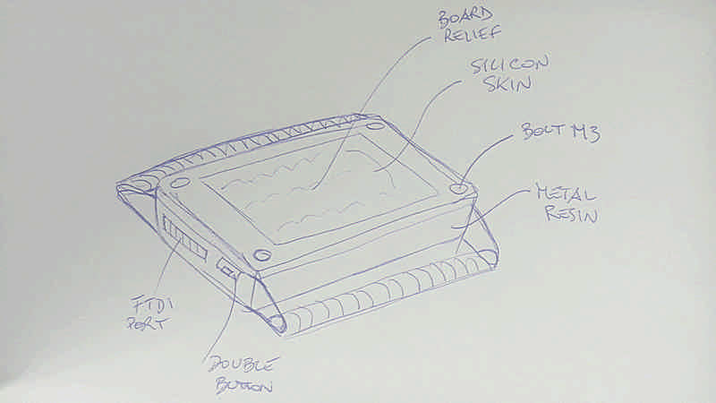

Final Project | Assignments | Download | About | Contact

A device to better manage our everyday time to help us to not overcommit our lives.
A simple way to visualize and manage time from a different point of view.
A non invasive but strongly communicative device to tink about time as a discrete resource instead of a continuous flow.
It count time as a percentage over an amount of time defined by the user instead of a delta between two moments. This way I can commit an amount of time to do something and monitor how much time left I have.
Thinking about our everyday life we can easily recognize three main classes of tasks: duties, leisure and needs. These three categories are bounded by the following equation:
Duties + Leisure < 24h - Needs
so each of them is a variable that everyone can set.
The residual amount for each variable is shown by three led bars, going always from 100% to 0% at different rates depending on the amount of time resource committed for each one.
Two buttons to press simultaneously allow to swap from a variable to another.
When the current variable reach the 0% automatically the other two will be decreased at half of each rate until you wont choose which one is currently running; when also the second variable has reached the 0% the remaining variable continue to decrease at it’s own rate.
In further development I may integrate:
- rechargeable lithium battery
- less energy drain display
- liquid cristal/oled display
- subroutine to manage up to 5 tasks per category
- gather statistics of habits and time commitment
- make a good package
Everything starts from this an article I’ve read online some month ago. A Formula to Stop You from Overcommitting Your Time
This device will just show this simple principle overtime.
Online I’ve found different watches with fancy displays, but the most counts on an hour and minute base, just because they are watches, and they don’t need to be configured but just synchronized with the local area time.
At the following link I’ve found a great website about data visualization Flowing Data
The whole project can be divided in several parts; every part may be made in one ore more process:
Electronics
Milling of a double layer board
Soldering of the electronics components
Testing
Code
Code to drive the led matrix
Program of the device
Configuration interface
Enclosure
Frame in casted resin
Front 3D printed
Watchstrap
Lasercutted and sewed leather
Electronics
Atmel ATtiny44
Quantity 1
Cost 1.05€
Led Blue Clear 1206
Quantity 15
Cost 0.45€
Resistor 0kOhm 1206
Quantity 1
Cost 0.004€
Resistor 10kOhm 1206
Quantity 1
Cost 0.05€
Resistor 499Ohm 1206
Quantity 5
Cost 0.03€
Capacitor 1uF 1206
Quantity 1
Cost 0.14€
FTDI pins
Quantity 1
Cost 0.14€
ISP pins
Quantity 1
Cost 1.86€
Enclosure
Frame
Quantity 20g
Cost 3€
Process Casting
Front
Quantity 5g
Cost 0.50€
Process 3D print
Follow the schedule above.
Will it be a useful device?
Will help me to better organize my time?
How can it evolve?
What function can easily be integrated using the same hardware?
What functions can be integrated upgrading the hardware?
How can it be optimized?
Does people will build it? and why? or why not?
Step1: the led matrix works NOT YET
Step2: the double-button works cycling the counters NOT YET
Step3: the configuration via FTDI works NOT YET
Step4: the configuration interface works NOT YET
Step5: the case of the device fits properly on my wrist NOT YET